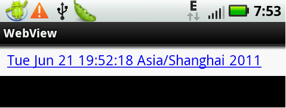

我们可以通过WebViewClient在WebView中加钩子来获取触发事件和相 应。下面是一个简单的例子，浏览器中显示目前的时间，并作为一个链接，当我们点击这个链接时，更新为当前最新时间。
package com.iteedu.webview;
import java.util.Date;
import android.app.Activity;
import android.os.Bundle;
import android.webkit.WebView;
import android.webkit.WebViewClient;
public class WebViewExample extends Activity {
private WebView browser= null;
protected void onCreate(Bundle savedInstanceState) {
super.onCreate(savedInstanceState);
setContentView(R.layout.main);
browser = (WebView)findViewById(R.id.WebView01);
browser.setWebViewClient (new WebViewClient() {
/* 这个事件，将在用户点击链接时触发。
* 通过判断url，可确定如何操作，
* 如果返回true，表示我们已经处理了这个request，
* 如果返回false，表 示没有处理，
* 那么浏览器将会根据url获取网页*/
public boolean shouldOverrideUrlLoading (WebView view, String url) {
loadTime();
return true ; //表 示已经处理了这次URL的请求
}
});
loadTime();
}
private void loadTime(){
String page="<html><body><a href=\"clock\">" +
new Date().toString() + "</a></body></html>";
/* 这里我们使用了loadDataWithBaseUrl的方式。
* 浏览器可以通过"file:///android_asset/"来获得映用中asset/的资源。
* 但是如果我们没有设置baseUrl，或者为空，这无法获取，
* 想获取这些资源，baseUrl不能设置为http(s)/ftp(s) /about/javascript
* 这些已有专属的定义。
* 在例子中，我们baseUrl设置为"wei://base".
* 对于上面的那个链接地址为wei://base/clock */
browser.loadDataWithBaseURL ("wei://base", page, "text/html","UTF-8", null);
}
}